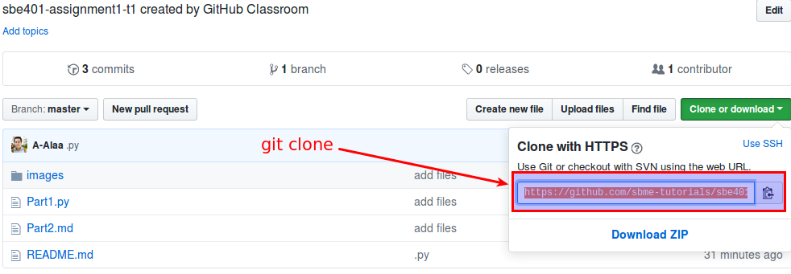

Assignment 1: Images, Histograms, Gradients
Objectives
- Loading images.
- Visualizing images.
- Visualizing histograms of images.
- Computing image gradients.
- Interacting with images.
- Basic statistics on images.
- Realizing the explicit for-loops vs. vectorized operatoins in Python.
- Using Markdown as a technical writing syntax.
Prerequisites (Before you start)
- Read Section 1 Notes.
- Read Section 2 Notes.
Deadline
Thursday 1/3/2018 10:00 AM.
Joining to Assignment Repository
Refer to this sheet to know your gourp number: https://docs.google.com/spreadsheets/d/1DeAFPmF4OixVt4D_meMFvU3Q5n7KE0w2Ys4sdC11Jwo/edit?usp=sharing
- Go to theassignment page.
- You may need to authorize the classroom to access your repository.


- You either join to an existing team, or create a team, referring to the sheet.
- 
Part 1: Programming
Your implementations for this part should be included in Part1.py of your repository.
Implement a program that does the following:
1. Load colour (RGB) images
2. Display (RGB) images on a screen
- Hint: you may use code snippets from section notes. But it is recommended to find your own way.
3. Display the histograms of all three colour channels, for each Image, on the same figure
4. Select the image of our visitor of this week, Sir Pegion. Move the mouse cursor within your image. For the current pixel location p in the image, compute and display

- the outer border (see grey box) of the 11 × 11 square window around pixel p in your image I (i.e., p is the reference point of this window),
- (above this window or in a separate command window) the location p (i.e., its coordinates) of the mouse cursor and the RGB values of your image I at p,
- (below this window or in a separate command window) the intensity value at p, and
- the mean and standard deviation .
- Discuss examples of image windows W p (within your selected input images) where you see “homogeneous distributions of image values”, and windows showing “inhomogeneous areas”. Try to define your definition of “homogeneous” or “inhomogeneous” in terms of histograms, means, or variances.
5. Compute the gradient of the image
where:
is the derivative with respect to x (gradient in the x direction)
is the derivative with respect to y (gradient in the y direction).
Afterwards, combine the two gradients on a single image using the following formula:
- Implement a version with explicit for loops.
- Implement another version without using explicit for loops.
- Hint1: you can use numpy.roll function, see its documentation for further details.
- Hint2: you can also use numpy.pad function, then using array slicing to drop columns or rows to match dimensions.
- Report the execution time for both versions.
Part 2: Written
You answers to this part should be included in the Part2.md file in the repository of your assignment.
Also, your answers should be formatted as Markdown syntax.
Q1
Transform a few more (easy) RGB values manually into corresponding HSI values.
Q2
In the CIE’s RGB colour space (which models human colour perception), the scalars R, G, or B may also be negative. Provide a physical interpretation (obviously, we cannot subtract light from a given spectrum).
Submitting
$ git commit -a -m "solved all problems!"
$ git push origin master